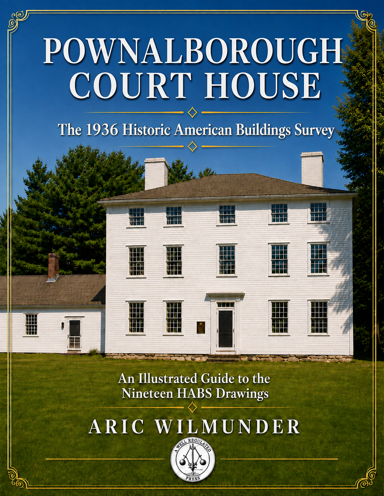

Research
A Well-Regulated Press publishes original historical research,
artifact studies, family history investigations, museum interpretation
methodologies, and educational resources.
The current collection grew from research conducted for
The Prescott Girls: A Letter from Philadelphia
and now includes studies of schoolgirl samplers, the Prescott family,
descendants of Betsy Ross, historical visualization, and AI-assisted
museum interpretation.
✦ ✦ ✦

Pownalborough Court House: The 1936 Historic American Buildings Survey
An illustrated research study examining the 1936 Historic American Buildings Survey of the Pownalborough Court House in Dresden, Maine. The project analyzes the survey's measured drawings and photographs while placing the work within the history of HABS and historic preservation in Maine.
Preview The Book
Historical Research Collection
Research papers documenting the discovery of six related schoolgirl samplers and the historical investigations that followed, including the Prescott family, Pownalborough Court House, and connections to the descendants of Betsy Ross.
View Research Collection
Historical Gallery
Photographs documenting the discovery of the Prescott family samplers and the research that followed, including the original artifacts, family records, historic places, museum visits, and source materials used to understand the people and history behind The Prescott Girls.
View Historical Gallery
Teacher Resources
Classroom guides, discussion questions, historical background,
and educational activities.
View Teacher Resources
✦ ✦ ✦
About the Collection
The research collection began with the discovery of six related
nineteenth-century schoolgirl samplers found in a California auction.
What followed was a multi-year investigation connecting the Prescott,
Johnson, Canby, and Betsy Ross families through surviving artifacts,
family records, museum collections, probate documents, cemetery studies,
and historical correspondence.
Today the collection includes research papers, educational materials,
public presentations, and historical interpretations developed in
collaboration with museums, historians, textile scholars, and
descendants of the families involved.